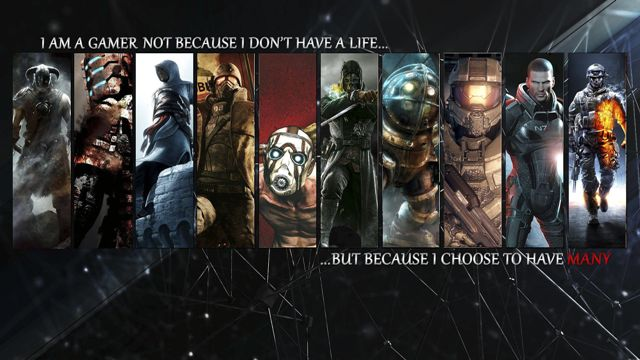

Why I like videogames.
I love to play videogames. I like to spend most of my free time playing them.I play games entirely on my PC and online. My favorite genres are role-playing games(RPGs), first-person shooters(FPS), and strategy games. I like playing them because they give me an entertaining challenge and they allow you to experience stories in a unique way. I often go to a website called Penny Arcade to get news about games and to talk about them on the forum there.
I don't know what I'd do without videogames
I've never been much for sports and I'm not really a people person so I was draw to videogames at a early age. It certainly gives me something to do and playing multiplayer games helps fill the gap in my socializing.

Videogame series I like.
- Final Fantasy
- Fallout
- Deus Ex
- Dead Space
- The Witcher
And those are just some examples. I playing a lot of different generes but those series stick out the most in my mind.
My prefered gaming system is the PC
I've been playing games exclusively on the PC for many years now. I think it really started when I got into World of Warcraft and after that I just gravitated toward more PC games. I think being able to simply buy and download games also held an appeal as it meant I wouldn't have to go to stores and could avoid human contact even more than I already did.